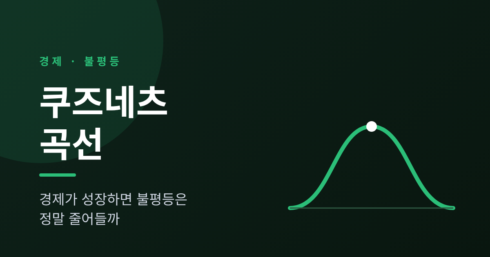
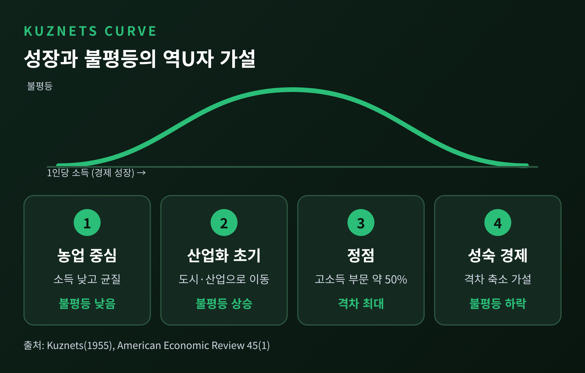
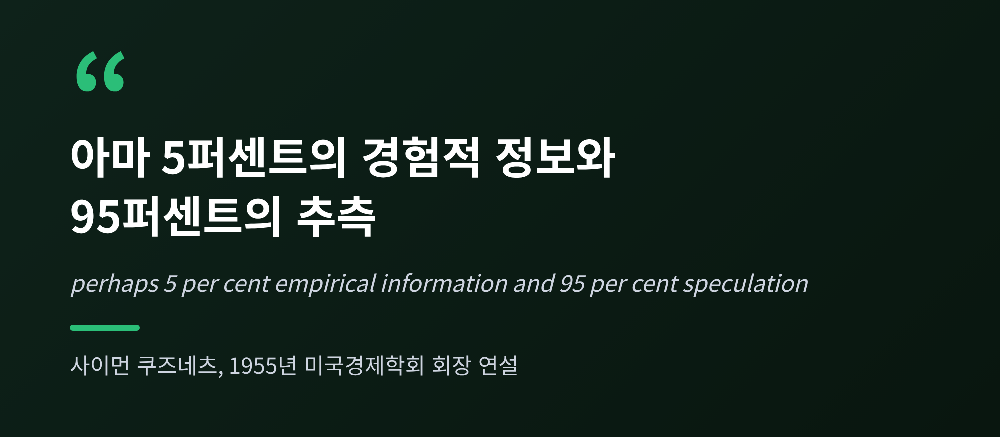
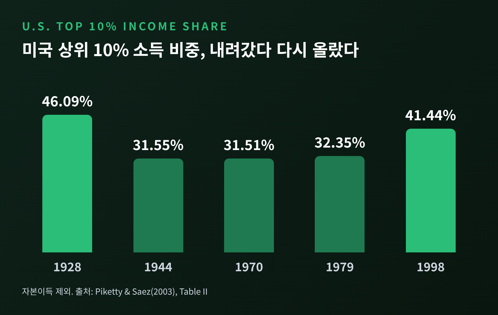
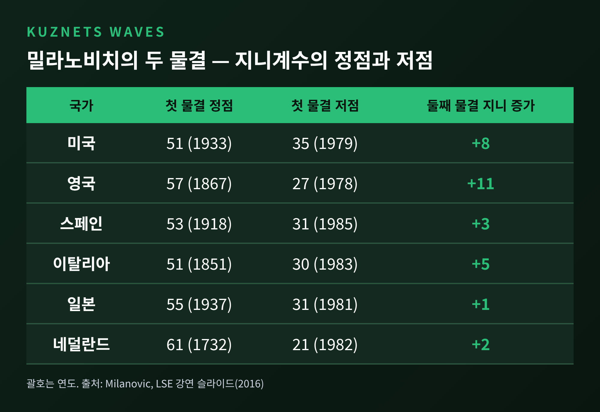
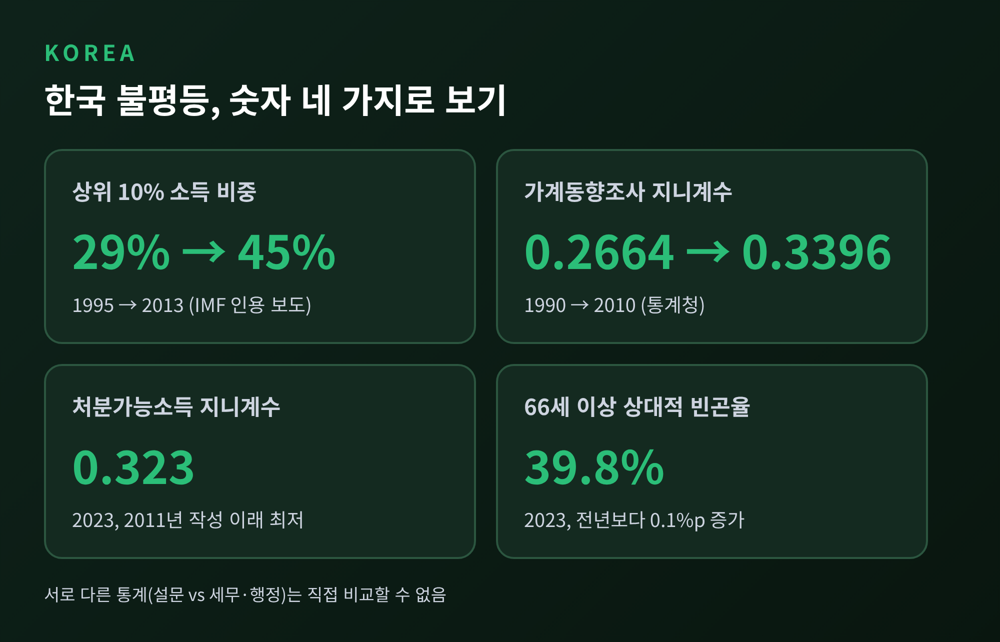

이번 글에서는 쿠즈네츠 곡선을 정리해 보겠습니다.
경제가 성장하면 불평등은 처음에 커졌다가 결국 줄어든다는 가설입니다.
70년이 지난 지금, 이 곡선은 법칙이 아니라 논쟁의 대상으로 남아 있습니다.
먼저 결론부터 적겠습니다.
사이먼 쿠즈네츠는 1955년 미국경제학회 회장 연설에서 이 가설을 내놓았습니다.
논문 제목은 「Economic Growth and Income Inequality」, 『American Economic Review』 45권 1호에 실렸습니다.
핵심 아이디어는 단순합니다.
소득이 낮은 농촌 사회에서 소득이 높고 격차도 큰 도시·산업 부문으로 사람이 옮겨 갑니다.
이 과정에서 불평등은 먼저 커집니다.
그러다 인구의 상당수, 흔히 절반 안팎이 고소득 부문으로 넘어가면 격차는 줄기 시작한다고 보았습니다.
그래프로 그리면 위로 볼록한 역U자가 됩니다.

예전에는 이 곡선이 성장 낙관론의 근거로 쓰였습니다.
지금은 성장만으로는 부족하다는 반증으로 더 자주 읽힙니다.
논문이 다룬 자료는 많지 않았습니다.
미국, 영국, 독일(프로이센·작센)의 시계열과, 인도·실론·푸에르토리코의 한 시점 자료가 전부였습니다.
미국 가구의 상위 20% 소득 비중은 1929년 약 55%에서 2차 대전 후 약 44%로 내려갔습니다.
영국의 상위 5% 몫은 1880년 46%에서 1947년 24%까지 줄었습니다.
반면 프로이센은 1875년부터 1913년까지 불평등이 오히려 소폭 커졌습니다.
인도와 실론 등 당시 저소득 국가는 상위 20%가 소득의 50~56%를 가져가, 미국(44%)과 영국(45%)보다 격차가 컸습니다.
정작 쿠즈네츠 자신은 조심스러웠습니다.
소득구조의 추세는 "어렴풋이 식별될 뿐"이며 결과는 예비적인 추측이라고 적었습니다.
2~3%포인트 차이에는 의미를 둘 수 없다고도 했습니다.
논문 전체를 두고는 "아마 5퍼센트의 경험적 정보와 95퍼센트의 추측"이라고 인정했습니다.

미국의 하락 구간은 대공황과 전쟁기를 포함합니다.
피케티는 쿠즈네츠가 이 사실을 알고 있었다고 설명합니다.
다만 이 곡선이 자연스러운 평등화의 경로처럼 받아들여진 것은 냉전기의 낙관과 맞물린 결과라고 평가합니다.
경제사학자 로버트 포걸은 후대 학자들이 쿠즈네츠의 경고를 잊고 이 가설을 법칙처럼 다뤘다고 전합니다. 이 부분은 2차 자료를 거친 서술입니다.
1990년대 이후 국가별 시계열 자료가 쌓이면서 본격적인 검증이 시작되었습니다.
결과는 엇갈렸습니다.
디닝거와 스콰이어(1998)는 지역 차이를 통제하면 U자 형태가 대부분 사라진다고 보았습니다.
라틴아메리카처럼 역사적으로 불평등이 높은 지역이 효과를 만든다는 지적입니다.
필즈(2001)는 대규모 패널 연구를 근거로 가설이 기각되었다고 평가했습니다.
두 연구 모두 원문이 아닌 2차 자료로 확인한 내용입니다.
반대편 증거도 있습니다.
히긴스와 윌리엄슨(1999)은 인구 구성과 개방 정책을 함께 고려하면 쿠즈네츠 곡선이 나타난다고 보고했습니다.
다만 그 연구에서 가장 큰 힘은 곡선이 아니라 코호트 규모, 즉 인구의 세대 구성이었다고 결론 내렸습니다.
2008년 네덜란드 CPB의 분석은 약 80여 개국을 비교해 물결 모양의 3차 함수 관계를 찾았습니다.
소득이 낮을 때 오르고, 중간 소득에서 정점을 찍고, 고소득에서 내려갔다가, 아주 높은 소득에서 다시 오릅니다.
저자들은 이 결과가 최근 OECD 자료에 민감하다는 한계도 밝혔습니다.
동아시아는 또 다른 반례였습니다.
1965~1989년 연평균 4% 넘게 성장하면서 상위 20%와 하위 20%의 소득 비율이 10 미만이었던 경제는 모두 동아시아에 있었습니다.
한국과 대만이 여기에 속합니다.
토지개혁, 보편 교육, 임금정책이 그 배경으로 거론됩니다.
토마 피케티는 가계조사 대신 장기 세무자료를 썼습니다.
시계열도 20세기 전체, 30여 개국으로 넓혔습니다.
미국과 유럽 각국, 일본에서 소득 불평등은 1913년부터 1945년경까지 줄었다가 이후 다시 올랐습니다.
피케티와 사에즈(2003)가 정리한 미국의 상위 소득 비중은 다음과 같습니다.
상위 10%는 1928년 46.09%에서 1944년 31.55%로 떨어졌고, 1970년대에는 31~32% 부근을 유지했습니다.
그러다 1998년에 41.44%로 올랐습니다.
상위 1%는 19.60%에서 10.54%로 내려갔고, 1979년 8.03%를 지나 1998년 14.58%가 되었습니다.

피케티의 설명은 이렇습니다.
하락은 시장의 점진적인 이동에서 나온 것이 아닙니다.
두 차례 세계대전, 대공황, 자본의 파괴, 정치적 격변이 만든 충격이었다는 것입니다.
여기에 자본수익률이 성장률보다 장기적으로 높으면 부가 쏠린다는 r>g 논리를 더합니다.
논문 저자들 스스로도 누진 소득세와 상속세가 대형 재산의 회복을 막았다는 풀이를 "증명된 사실이 아닌 그럴듯한 해석"으로 표시했습니다.
이견도 있습니다.
애스모글루는 자료가 자본주의의 타고난 경향보다 기술 변화, 세계화, 정치 권력의 이동 같은 충격으로 더 잘 설명된다고 봅니다.
피케티가 해법으로 제시한 글로벌 자본세는 본인조차 "유토피아적 아이디어"라고 부릅니다.
경제학자 브랑코 밀라노비치는 곡선이 하나가 아니라 여러 번 반복될 수 있다고 말합니다.
이른바 쿠즈네츠 물결입니다.
첫 번째 물결에서 불평등이 정점에서 저점으로 내려오는 사이, 지니계수는 이렇게 움직였습니다.

내려오는 힘으로는 전쟁, 전염병, 내전 같은 악성 요인이 있습니다.
교육의 확대, 노조와 정치적 압력, 고령화에 따른 복지 수요 같은 양성 요인도 있습니다.
두 번째 물결에서는 미국과 영국이 각각 지니 8포인트, 11포인트 올랐습니다.
일본은 1포인트 오르는 데 그쳤습니다.
세계불평등보고서 2022에 따르면 2021년 상위 10%가 세계 소득의 약 52%를, 하위 50%가 8.5%를 가져갔습니다.
부는 더 쏠려 있어 상위 10%가 76%, 하위 50%가 2%를 보유합니다.
1980년대 이후 거의 모든 나라에서 소득과 부의 불평등이 커졌고, 미국·러시아·인도에서 특히 컸습니다.
흥미로운 대목도 있습니다.
국가 간 격차는 줄었습니다.
세계 불평등에서 국가 간 요인이 차지하는 비중은 1980년 57%에서 2020년 32%로 내려왔습니다.
지금의 불평등은 대부분 나라 안에서 벌어집니다.
보고서는 불평등이 필연이 아니라 정치적 선택이라고 적었습니다.
학계의 검증도 이어집니다.
2023년 중·동유럽 국가의 2004~2020년 자료를 분석한 논문은 곡선의 지지가 이론이 시사하는 것보다 훨씬 덜 견고하다고 보고했습니다.
2024년 9월 헬싱키에서는 「쿠즈네츠 곡선 70주년」을 주제로 한 국제 심포지엄이 열렸습니다.
브라질, 인도, 인도네시아 사례가 논의되었으나, 개별 논문의 결론은 이번 조사에서 확인하지 못했습니다.
한국의 경험은 두 갈래로 나뉩니다.
1960~80년대의 고성장기에는 성장과 비교적 평등한 분배가 함께 갔습니다.
세계은행의 존 페이지는 한국과 대만을 이 유형으로 분류했습니다.
변화는 1990년대 중반 이후에 나타났습니다.
IMF 보고서를 인용한 보도에 따르면 한국의 상위 10% 소득 비중은 1995년 29%에서 2013년 45%로 올랐습니다.
아시아 평균이 1~2%포인트 오르는 동안 한국은 16%포인트가 뛰었습니다.
김낙년 교수는 원인으로 중국 수교 이후의 제조업 일자리 감소, 숙련 편향 기술 변화, 1997년 이후의 성과급 중심 기업 지배구조, 70% 안팎에서 38%로 내려간 최고 소득세율을 꼽았습니다.
통계청 가계동향조사 기준 지니계수는 1990년 0.2664에서 2010년 0.3396까지 올랐고, 2015년에는 0.3320이었습니다.
설문 기반 통계는 상위 소득을 덜 잡는 경향이 있어 수치가 낮게 나옵니다.

최근 공식 통계는 개선을 말합니다.
2023년 처분가능소득 지니계수는 0.323으로 2011년 작성 이래 가장 낮았습니다.
5분위 배율도 5.72배로 내려갔습니다.
그러나 같은 통계에서 66세 이상의 상대적 빈곤율은 39.8%였습니다.
이 개선을 두고 비판도 있습니다.
하락 폭은 0.001로 작고, 하위 계층의 개선은 공적 이전소득의 영향이 크다는 지적입니다.
설문에 고소득층이 덜 잡힌다는 한계도 있습니다.
국민이 체감하는 불평등은 소득 지표보다 자산과 일자리 불안에 좌우된다는 의견도 있습니다.
정리하면 이렇습니다.
쿠즈네츠의 가설은 틀린 이야기가 아니라, 너무 일찍 법칙이 된 이야기였습니다.
산업 구조가 바뀌면 격차가 벌어질 수 있다는 관찰에는 근거가 있습니다.
하지만 성장이 격차를 스스로 줄여 준다는 결론은 자료가 받쳐 주지 못했습니다.
줄어든 시기에는 전쟁과 세제, 교육, 노동 제도가 있었습니다.
늘어난 시기에는 기술, 세계화, 기업 지배구조, 세율의 변화가 있었습니다.
"성장은 불평등을 저절로 고쳐 주지 않는다."
이 한 문장이 70년의 논쟁이 남긴 가장 단단한 결론이라고 생각합니다.
앞으로의 성장이 누구에게 닿을지를 물으신다면, 답은 곡선이 아니라 제도에 있다고 말씀드리겠습니다.